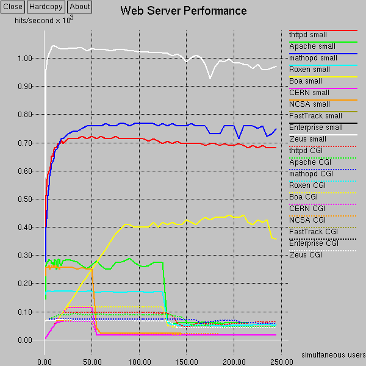

Web Server Comparisons
"...factoring out I/O, the primary determinant to server performance
is the concurrency strategy."
-- JAWS: Understanding High Performance Web Systems
Some comparisons between various web servers.
We look at features, sizes, and performance.
The headers in the table are links to explanatory notes below.
Bright green entries indicate something unusually good, and red
entries are something bad, sometimes with a link to a note explaining why.
Don't get too excited over the performance figures.
Most of these servers have enough oomph to keep a T1 saturated, running
on a lowly 100MHz Pentium or maybe even a 486.
Very very few web applications need more power than that.
So, the fact that Apache is not that fast shouldn't be of concern
to most people.
Last updated 12jul98.
| software |
features |
size |
RPS |
max users |
name |
| name |
version |
released |
active devel |
model |
auto conf |
basic auth |
chroot |
throttling |
tar bytes |
source files |
source lines |
exe |
small files |
CGI |
large files |
| thttpd |
2.03 |
11jul98 |
yes |
select |
yes |
yes |
yes |
yes |
406,016 |
20 |
7,229 |
49,584 |
720 |
100 |
1000+ |
thttpd |
| Apache |
1.3.0 |
05jun98 |
yes |
pre-fork |
yes |
yes |
no |
no |
4,925,440 |
149 |
73,381 |
397,152 |
250 |
90 |
150 |
Apache |
| mathopd |
1.2b9 |
23may98 |
yes |
select |
yes |
no |
yes |
no |
112,640 |
8 |
3,658 |
49,088 |
770 |
75 |
500 |
mathopd |
| Roxen |
1.2.29 |
10jun98 |
yes |
threads |
yes |
yes |
yes |
no |
14,274,560 |
1,480 |
247,789 |
502,284 |
170 |
11 |
50 |
Roxen |
| Boa |
0.92 |
23dec96 |
yes |
select |
no |
no |
no |
no |
225,280 |
21 |
4,103 |
75,788 |
475 |
115 |
50 |
Boa |
| Jigsaw |
2.0beta1 |
08apr98 |
yes |
Java threads |
n/a |
yes |
yes |
no |
11,341,824 |
594 |
95,744 |
1,841,601 |
45 |
n/a |
25 |
Jigsaw |
| Acme.Serve |
- |
18may98 |
yes |
Java threads |
n/a |
no |
no |
yes |
302,592 |
27 |
4,718 |
79,943 |
45 |
n/a |
25 |
Acme.Serve |
| CERN |
3.0A |
15jul96 |
no |
fork |
yes |
yes |
no |
no |
2,703,360 |
153 |
56,028 |
561,696 |
115 |
65 |
300 |
CERN |
| NCSA |
1.5.2a-export |
12oct96 |
no |
pre-fork |
no |
yes |
no |
no |
931,840 |
77 |
23,726 |
196,040 |
260 |
70 |
350 |
NCSA |
| Netscape FastTrack |
3.01-export-us |
02oct97 |
no |
threads |
n/a |
yes |
? |
no |
62,443,520 |
n/a |
n/a |
1,896,016 |
- |
- |
- |
Netscape FastTrack |
| Netscape Enterprise |
3.5.1-export-us |
02feb98 |
yes |
threads |
n/a |
yes |
? |
no |
130,426,880 |
n/a |
n/a |
1,977,568 |
- |
- |
- |
Netscape Enterprise |
| Zeus |
3.1.4 |
10jul98 |
yes |
select |
n/a |
yes |
no |
yes |
3,747,840 |
n/a |
n/a |
1,367,976 |
1050 |
70 |
500 |
Zeus |
Notes:
- Software - which web server.
-
Name - the name of the server, and a link to
its home page.
-
Version - the version tested here.
-
Released - when it was released.
-
Active devel - whether it is currently
under development.
-
Features - some key server features.
-
Model - what kind of server it is.
The models are:
-
fork - start a new process for each request.
-
pre-fork - pre-start a pool of processes which each handle
multiple requests.
-
threads - use threads instead of processes.
-
Java threads - this version of the Java runtime uses
"Green threads" instead of native threads, so it acts more
like the select-based servers.
-
select - use non-blocking I/O and the select() system call
to handle multiple requests in a single process, single thread.
-
Auto-conf - whether there's a script
to automatically configure the build process for your OS.
-
mathopd did not compile out-of-box
under Solaris 2.6, I had to make a minor edit.
-
Roxen did not compile under
Solaris 2.6, I had to build under Solaris 2.5.1.
-
Basic auth - whether the server supports
Basic Authentication, for password-protected web pages.
-
Chroot - whether the server lets you use
the chroot() system call to enhance security.
-
Throttling - the ability to set bandwidth
limits on certain pages, so they don't use more than their fair
share of the server's resources.
-
Size - various sizes of parts of the server
-
Tar bytes - the uncompressed source
tarchive size.
-
Source files - how many source and
header files.
-
Source lines - how many lines in the source
and header files.
-
Exe - the executable size.
For the compiled program this is size of the main executable file,
stripped.
For the Java servers it's the total size of the .class files or .zip
files.
For Roxen it's the size of the Pike interpreter.
-
The benchmark test system is a 297MHz Ultra Sparc with
256MB RAM / 512MB swap running Solaris 2.6, otherwise totally quiescent.
RLIMIT_NOFILE is 256 soft / 1024 hard, and v.v_maxup is 3941.
-
The test loads were generated on a separate machine connected via
100MB/s ethernet. The test client is
http_load, doing
multiple requests in parallel, with checksumming enabled.
-
All the test runs were done at least twice on different days, and
all the shapes and inflection points etc. proved to be completely
repeatable.
-
All programs are in their out-of-box configuration, except as
needed for the tests (e.g. enabling CGI). And except for mathopd,
which doesn't have an out-of-box configuration - I used
this one.
-
RPS - maximum requests per second. This is
determined by running the test load at various parallel-request
rates and finding the maximum response rate. See the graph below
for the full data.
-
Small files - the small-file test load
consists of 1000 files, each 1KB long, requested randomly.
-
Acme.Serve exitted at 60 parallel
requests, due to running out of file descriptors. Apparently
the Java runtime uses three file descriptors per thread, or
something like that. But still, the program shouldn't exit!
-
Jigsaw mysteriously refused to
serve 40 of the 1000 files in the test load. Same 40
consistently. I took those 40 out of the test and the
other 960 files worked fine. This sort of thing doesn't
really build confidence in a server.
-
CGI - the CGI test load consists of a
trivial "hello world" C program.
-
Roxen started returning bad checksums
at only 3 parallel CGI requests.
-
Some of the servers do not implement the parts of the CGI
spec that require header-parsing - thttpd, mathopd, Boa,
perhaps others. This could be seen as giving them an unfair
advantage at performance comparisons.
-
Max users - maximum number of simultaneous
users that can be handled. This is determined by running the test
load at various parallel-request rates and seeing when it starts
screwing up. Typical screwups are running out of memory or processes,
so that requests start timing out or getting refused.
-
Large files - the large-file test load
consists of 100 files, each 1MB long, requested randomly.
Also, each connection is throttled to simulate a 33.6Kbps modem.
Note that 1000 33.6Kbps connections is 3/4 of a T3.
-
Some servers that I wanted to benchmark but didn't get to:
Here's a graph of the full data:

Comments:
-
That nice diagonal line is very interesting. A bunch of very
different servers follow it exactly for the first part of their curve.
Its slope is 5 hits/second per user, indicating that each hit takes a
minimum of 1/5th second to handle. But other servers don't follow it,
showing that it's not an inherent limit in the test setup.
thttpd-2.00 was following the line, while mathopd, a very similar
server, does not, so I made some changes to thttpd to try and get
its latency to be more like mathopd's. Turns out the change that
made the difference was sending the response headers and the first
load of data as a single packet, instead of as two separate packets.
Apparently this avoids triggering TCP's "delayed ACK", a 1/5th
second wait to see if more packets are coming in. thttpd-2.01 has the
single-packet change.
-
The sharp drop-off at 125 users for a bunch of different servers
is mysterious, especially considering it applies to servers of three
different models - pre-fork, threads, and select - and that other
servers are immune.

ACME Labs / Software / thttpd